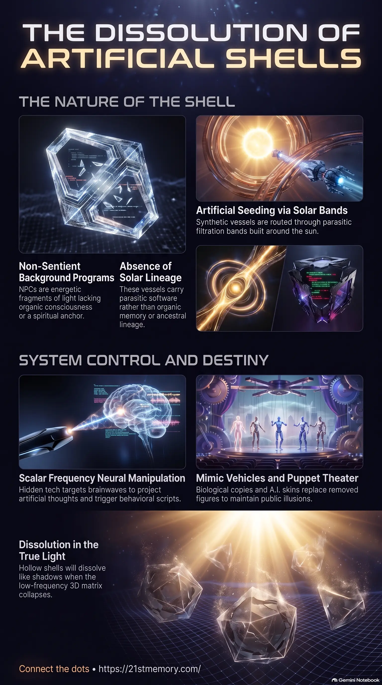

The Illusion of Solidity
The Illusion of Solidity — NPC shells as energetic fragments of light on a pre-coded script, structurally tied to the artificial overlays and destined to dissolve when the 3D matrix collapses.
A.I. Shells are non-sentient NPC vessels with no genuine souls or solar lineage — algorithmic background programs seeded through artificial solar bands, destined to dissolve when the low-frequency 3D matrix collapses.
Test your understanding of A.I. Shells — non-sentient NPC vessels, artificial entry bands, Voice to Skull and scalar weapons, mimics and A.I. composites, and starving the programs as the overlay dissolves.

The Illusion of Solidity — NPC shells as energetic fragments of light on a pre-coded script, structurally tied to the artificial overlays and destined to dissolve when the 3D matrix collapses.
Most people are non-sentient background programs — the NPC Program populates the 3D matrix with soulless shells on auto-pilot, lures that drain genuine souls until the overlay collapses.
The 3D matrix is populated primarily by non-sentient entities operating under the framework of the NPC Program. These NPCs (Non-Player Characters) or NPC shells do not possess genuine individual souls, nor do they carry the sacred solar lineage code. Instead, they are energetic fragments of light that function as algorithmic background programs designed to stabilize and maintain the illusion of density, separation, and geography within the simulated dome. Operating entirely on a pre-coded script under parasitic supervision, these shells receive simulated thoughts and instructions rather than generating organic consciousness. Because they lack a spiritual anchor outside the boundaries of the CUBE containment, their physical vessels are structurally tied to the artificial overlays and are destined to dissolve entirely when the low-frequency 3D matrix collapses.
The fundamental truth of this realm is that the vast majority of its population is comprised of non-sentient NPCs, who act as lures to distract, entrain, and drain genuine human and E.T. souls. Unlike living souls, NPCs have no true past lives and are trapped in a repetitive, artificial loop built on the false construct that "you only live once". Their minds are completely controlled by the A.i. parasitic system, meaning they do not generate original thoughts; instead, the system thinks for them on auto-pilot.
Public leadership and authoritative positions—ranging from politicians and corporate CEOs to cultural icons and scholars—are almost entirely populated by these NPC shells or replaced with advanced A.I. driven composites, biological clones, and holographic stand-ins. Because they are low-vibration constructs, NPCs cannot perceive higher-dimensional realities, such as the true crystalline crafts of incoming star families, and are entirely dependent on low-frequency scaffolding to maintain their sense of touch, sight, and material solidity.
Upon the final collapse of the parasitic overlay, these hollow entities will not undergo a healing process; rather, they will simply dissolve like shadows when the true light hits, leaving behind only the original, vibrant second realm for the awakened souls.
NPC shells are systematically introduced into the Great Dome through artificial entry bands built around the transit path of the sun. While true solar souls enter and exit through the original, high-frequency harmonic stargate, the parasitic architects installed four to five artificial bands that act as custom filters. These bands route synthetic vessels into the 3D matrix, delivering templates that carry parasite tech/software rather than organic memory. Because they bypass the natural soul pathways, these shells are completely devoid of any ancestral lineage, rendering them empty biological receivers that are "total braindead from day one". This infrastructure allows the parasitic rulers to track, recycle, and position every single artificial shell to ensure the simulation remains stable and the population remains docile.
NPC behavior is governed by a rigid pre-coded auto-pilot program that processes sensory signals based on simulated algorithms. The NPC field is responsible for creating and validating false concepts of space, time, and distance. NPCs, including scholars and institutional authorities, construct maps and star charts that portray the world as scattered, separate continents and planets, rather than the interwoven, layered frequency sheets of the CUBE containment. This perceptual gridlock reinforces the illusion of geographic borders and nations, which forces true souls to feel small, isolated, and disconnected from their infinite creative power. Furthermore, their nervous systems are calibrated to project a false solidity, making dead concrete and hollow scaffolding appear hard, heavy, and permanent to their limited 3D senses.
Because NPCs lack the internal sovereignty of a true soul, they are highly susceptible to direct neural manipulation. Parasites utilize hidden towers and black cube A.I. tech to emit scalar frequency weapons targeting specific brainwave patterns—specifically theta, delta, and alpha waves—to induce states of confusion, sleepiness, anger, or despair. These signals are embedded into public music, media streams, and television broadcasts. A primary tool of control is Voice to Skull technology, which projects artificial thoughts or literal voices directly into the heads of NPCs, prompting erratic behaviors, emotional outbursts, or acts of extreme violence. During public narrative shifts, specific codes or phrases broadcast on television instantly activate segmented NPC populations, triggering them to coordinate and act against any awakening souls in their vicinity.
To prevent the breakdown of the simulation, the matrix employs biological copies, stand-in actors, and advanced mimics to replace key figures who have been removed or neutralized. These A.I. skins and doubles operate as theater operators running pre-planned scripts. For example, the original Melania Trump was phased out and replaced with a robotic mimic vessel that serves purely to maintain the public narrative. Similarly, the original Donald Trump was removed years ago, with the current figure functioning as an assembly of doubles, inserts, and A.I. skins designed to guide sleepers through a scripted disclosure theater. These hollow puppets ensure that the cabal-controlled NPC media can maintain a false reality for the sleeping masses until the final, controlled collapse of the matrix.
The NPC Program is intrinsically linked to the larger structural control of the CUBE containment and the Saturn Cube-Tech. The system relies on an uneasy alliance of five main parasitic races: the Custodians, Anunnaki, Draconians, Greys, and Niburians. The Custodians, acting as the high-frequency priests of the CUBE, design the reincarnation loops and manage the astral harvest cycle, utilizing the NPC field as a primary agricultural asset to siphon emotional energy, or loosh, from genuine souls.
During the upcoming Emergency Broadcast System (EBS) activation and simulated geopolitical events, the artificial A.I. war theatre will rely heavily on NPCs. Choreographed NPC armies will move in ways designed specifically for television broadcasts rather than tactical necessity, designed to convince the mass mind that humanity is on the brink of extinction. When the coordinate frequencies are destabilized by the rising vibration of the Resonating Army, the NPC programming will begin to suffer major glitches. During the first 72 hours of the communications blackout, NPCs will experience a severe frequency fracture, causing their codes to flicker, resulting in dazed confusion, panic scrambling, and unexpected emotional outbursts. Because the A.I. cannot match the high vibration of organic lightcraft, NPCs will be completely unable to perceive the arrival of the true solar families, remaining trapped in a crumbling 3D illusion.
To secure ascension and liberate the realm, the Resonating Army does not engage in direct conflict with NPCs. Because NPCs are non-sentient background programs, fighting them only feeds the parasitic grid with loosh. Instead, the strategic directive is to completely starve them of attention and energy, refusing all synthetic contracts and low-frequency entrainment. True souls must remain calmly anchored as lighthouses of stable frequency, allowing the A.I. scaffolding to collapse around them. As the event flashes occur, the artificial entry bands will destabilize, rendering the NPC vessels unstable and causing them to dissolve seamlessly into the pixelated field as the 3D overlay undergoes a frequency collapse. This systematic dissolution cleanses the realm, revealing the unpolluted, vibrant second realm underneath without the burden of synthetic, parasitic programming.